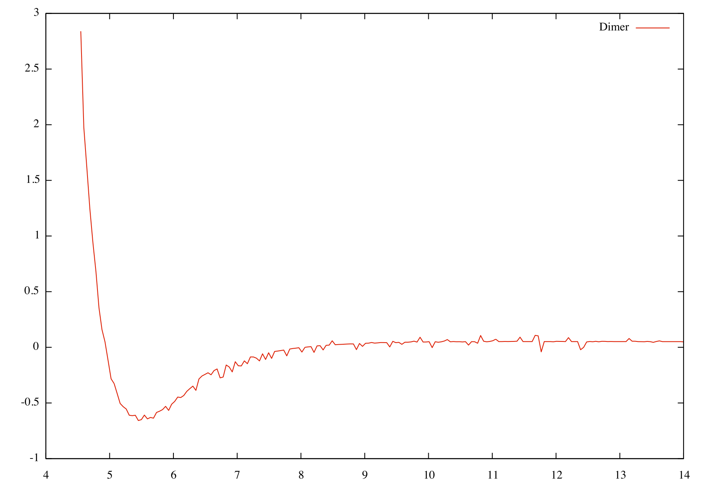

Running a 1d df experiment.
Before we try a full FM-AFM simulation lets try a simpler case in 1d, so first lets add the vafmcircuit and pll modules.
1 from vafmcircuits
import Machine
Lets initialise our machine and a few parameters;
1 machine = Machine(machine=
None, name=
'machine', dt=5e-8)
Next lets add a scanner circuit so we can move the cantilever around;
1 scanner = machine.AddCircuit(type=
'Scanner',name=
'scan', Process = machine, pushed=
True)
Next lets add a cantilever with the following parameters;
1 canti = machine.AddCircuit(type=
'Cantilever',name=
'canti', Q=42497, k=112.32, f0=f0, startingz=Az, pushed=
True)
We need to add our amplitude detector to give us a normalised signal as well as amplitude of the cantilever;
1 machine.AddCircuit(type=
"Machine",name=
'amp', fcut=500, assembly=aAMPD,
We need to know just how much we must excite the cantilever so we can do this using a PI circuit;
1 machine.AddCircuit(type=
'PI', name=
'agc', Kp=2.1, Ki=0.1, set=Az, pushed=
True)
It often safe practice to limit the agc signal so it doesn't get to high or negative so to do this we will implement a limiter circuit.
1 machine.AddCircuit(type=
"limiter",name=
'agclim', min=0,max=10, pushed=
True)
The most important part of an AFM set up is the PLL (Phase lock loop) as this is the device that actually gives us the change in frequency. Again we have a PLL composite circuit all set up already so simply follow the parameters given below;
1 machine.AddCircuit(type=
"Machine",name=
'pll', assembly=dPFD, gain=1000.0, fcut=500, KI=3,KP=0.5, f0=f0 , pushed=
True)
We need the excitation signal to be off phase by pi/2. Since we are using a digital pll we find that the signal and the reference will be 0 when they are both exactly in phase (unlike the analogue pll where the signal and reference are out of phase by pi/2) so in order for us to excite the cantilever with a phase of pi/2 we must simply invert the sin channel of the pll to give us a peak at the correct phase.
1 machine.AddCircuit(type=
'opMul',name=
'pllinv',in2=-1, pushed=
True)
in order for us to excite the cantilever we must multiply the output of the PLL with the output of the PI circuit to ensure we get an appropriate excitation circuit, hence we must add a multiplication circuit;
1 machine.AddCircuit(type=
'opMul',name=
'exc', pushed=
True)
We need to have some force for the cantilever to feel, the VDWtorn circuit will be used which is simply an equation that you can fit to a force curve but for all intensive purposes all it is, is a circuit that has an input of distance from surface and gives a force out as a result.
1 machine.AddCircuit(type=
'VDWtorn', name=
'Dimer',A1=-0.0166279, A2=0.22753,A3=-1819.29, A4=27055.6, A5=-106878., A6=31.8093, tipoffset=0, pushed=
True)
since we are only intrested in dimension lets connect the scanner z channel to the cantilevers holder;
1 machine.Connect(
"scan.z" ,
"canti.holderz")
Lets connect the positon of the cantilever tip to the force circuit
1 machine.Connect(
"canti.zabs" ,
"Dimer.ztip")
Next lets take our force from the VDWtorn and connect it to our cantilever;
1 machine.Connect(
"Dimer.fz" ,
"canti.fz")
Lets connect the ztip of the cantilever to our amplitude detector;
1 machine.Connect(
'canti.ztip',
'amp.signal')
So lets connect the amplitude to the agc circuit
1 machine.Connect(
'amp.amp',
'agc.signal')
Next we must hook up the pll (this is a digital one compared to the analogue one used in the full NaCl FM-AFM tutorial, so the inside mechanics are different). We need to connect the normalised cantilever signal and the cos channel of the pll to the vco channel of the pll.
1 machine.Connect(
'amp.norm',
'pll.ref')
2 machine.Connect(
'pll.cos',
'pll.vco')
We need to take our agc signal pass it to the limiter then to to the excitation multiplier;
1 machine.Connect(
'agc.out',
'agclim.signal')
2 machine.Connect(
'agclim.out',
'exc.in1')
Since we want to excite with a wave of pi/2 we must invert the sin wave and pass it through to the exciter multiplier and finally to the cantilever excitation channel.
1 machine.Connect(
'pll.sin',
'pllinv.in1')
2 machine.Connect(
'pllinv.out',
'exc.in2')
3 machine.Connect(
'exc.out',
'canti.exciter')
Next we need to add an output circuit to record the output (set dump = 0 since we plan to tell the output circuit when to record), lets also stop the circuit from outputting till we are ready;
1 out3 = machine.AddCircuit(type=
'output',name=
'output3',file=
'tut4.dat',dump=0)
2 out3.Register(
"scan.z",
"pll.df")
Since we want only record a set number of points over the line so lets connect the scanner record channel to the output channel;
1 machine.Connect(
"scan.record",
"output3.record")
next lets move the scanner to z=15, then down to z=14 and let the cantilever relax over 1 second.
1 scanner.Place(x=0,y=0,z=15)
2 scanner.Move(x=0,y=0,z=-1)
Finally lets start recording again and move the cantilever down 9.5 angstorms and record 200 points.
2 scanner.MoveRecord(x=0,y=0,z=-9.5,v=1,points=200)
The final output script will look like this;
2 from vafmcircuits
import Machine
3 from customs_pll
import *
6 machine = Machine(machine=
None, name=
'machine', dt=5e-8)
11 scanner = machine.AddCircuit(type=
'Scanner',name=
'scan', Process = machine, pushed=
True)
13 canti = machine.AddCircuit(type=
'Cantilever',name=
'canti', Q=42497, k=112.32, f0=f0, startingz=Az, pushed=
True)
15 machine.AddCircuit(type=
"Machine",name=
'amp', fcut=500, assembly=aAMPD, pushed=
True)
17 machine.AddCircuit(type=
"PI",name=
'agc', Ki=2.1, Kp=0.1, set=Az, pushed=
True)
18 machine.AddCircuit(type=
"limiter",name=
'agclim', min=0,max=10, pushed=
True)
20 machine.AddCircuit(type=
"Machine",name=
'pll', assembly=dPFD, gain=1000.0, fcut=500, KI=3,KP=0.5, f0=f0 , pushed=
True)
22 machine.AddCircuit(type=
'opMul',name=
'pllinv',in2=-1, pushed=
True)
23 machine.AddCircuit(type=
'opMul',name=
'exc', pushed=
True)
26 machine.AddCircuit(type=
'VDWtorn', name=
'Dimer',A1=-0.0166279, A2=0.22753, A3=-1819.29, A4=27055.6, A5=-106878., A6=31.8093, tipoffset=0, pushed=
True)
31 machine.Connect(
"scan.z" ,
"canti.holderz")
32 machine.Connect(
"canti.zabs" ,
"Dimer.ztip")
33 machine.Connect(
"Dimer.fz" ,
"canti.fz")
37 machine.Connect(
'canti.ztip',
'amp.signal')
38 machine.Connect(
'amp.amp',
'agc.signal')
39 machine.Connect(
'amp.norm',
'pll.ref')
40 machine.Connect(
'pll.cos',
'pll.vco')
42 machine.Connect(
'agc.out',
'agclim.signal')
43 machine.Connect(
'agclim.out',
'exc.in1')
44 machine.Connect(
'pll.sin',
'pllinv.in1')
45 machine.Connect(
'pllinv.out',
'exc.in2')
47 machine.Connect(
'exc.out',
'canti.exciter')
50 out3 = machine.AddCircuit(type=
'output',name=
'output3',file=
'tut4.dat', dump=0)
51 out3.Register(
"scan.z",
"pll.df")
55 machine.Connect(
"scan.record",
"output3.record")
58 scanner.Place(x=0,y=0,z=15)
59 scanner.Move(x=0,y=0,z=-1)
63 scanner.MoveRecord(x=0,y=0,z=-9.5,v=1,points=200)
The output should look like this;

 1.8.9.1
1.8.9.1